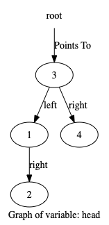
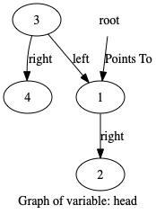
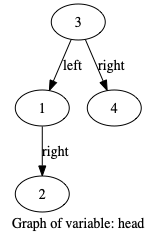

class TreeNode:
def __init__(self, val=0, left=None, right=None):
self.val = val
self.left = left
self.right = right
def __str__(self):
s = str(self.val)
if self.left:
s = str(self.left) + " "+s
if self.right:
s += " " + str(self.right)
return s
def __repr__(self):
return self.__str__()
def __eq__(self,other):
return self.__str__() == other.__str__()
def kthSmallest(root, k):
head = root # watchvar btree:left:right:val head
stack = [] # watchvar ref:head:btree root
while root or stack:
while root:
stack.append(root)
root = root.left
root = stack.pop()
k -= 1
if k == 0:
return root.val
root = root.right
def go():
# https://leetcode.com/problems/kth-smallest-element-in-a-bst/
a = TreeNode(3)
b = TreeNode(1)
c = TreeNode(4)
d = TreeNode(2)
a.left = b
b.right = d
a.right = c
kthSmallest(a,1)
Step:1,Line:31
Code executed:def go():
No Variable change detected in those marked for tracing
Step:2,Line:33
Code executed: a = TreeNode(3)
No Variable change detected in those marked for tracing
Step:3,Line:2
Code executed: def __init__(self, val=0, left=None, right=None):
No Variable change detected in those marked for tracing
Step:4,Line:3
Code executed: self.val = val
No Variable change detected in those marked for tracing
Step:5,Line:4
Code executed: self.left = left
No Variable change detected in those marked for tracing
Step:6,Line:5
Code executed: self.right = right
No Variable change detected in those marked for tracing
Step:7,Line:5
Code executed: self.right = right
No Variable change detected in those marked for tracing
Step:8,Line:34
Code executed: b = TreeNode(1)
No Variable change detected in those marked for tracing
Step:9,Line:2
Code executed: def __init__(self, val=0, left=None, right=None):
No Variable change detected in those marked for tracing
Step:10,Line:3
Code executed: self.val = val
No Variable change detected in those marked for tracing
Step:11,Line:4
Code executed: self.left = left
No Variable change detected in those marked for tracing
Step:12,Line:5
Code executed: self.right = right
No Variable change detected in those marked for tracing
Step:13,Line:5
Code executed: self.right = right
No Variable change detected in those marked for tracing
Step:14,Line:35
Code executed: c = TreeNode(4)
No Variable change detected in those marked for tracing
Step:15,Line:2
Code executed: def __init__(self, val=0, left=None, right=None):
No Variable change detected in those marked for tracing
Step:16,Line:3
Code executed: self.val = val
No Variable change detected in those marked for tracing
Step:17,Line:4
Code executed: self.left = left
No Variable change detected in those marked for tracing
Step:18,Line:5
Code executed: self.right = right
No Variable change detected in those marked for tracing
Step:19,Line:5
Code executed: self.right = right
No Variable change detected in those marked for tracing
Step:20,Line:36
Code executed: d = TreeNode(2)
No Variable change detected in those marked for tracing
Step:21,Line:2
Code executed: def __init__(self, val=0, left=None, right=None):
No Variable change detected in those marked for tracing
Step:22,Line:3
Code executed: self.val = val
No Variable change detected in those marked for tracing
Step:23,Line:4
Code executed: self.left = left
No Variable change detected in those marked for tracing
Step:24,Line:5
Code executed: self.right = right
No Variable change detected in those marked for tracing
Step:25,Line:5
Code executed: self.right = right
No Variable change detected in those marked for tracing
Step:26,Line:37
Code executed: a.left = b
No Variable change detected in those marked for tracing
Step:27,Line:38
Code executed: b.right = d
No Variable change detected in those marked for tracing
Step:28,Line:39
Code executed: a.right = c
No Variable change detected in those marked for tracing
Step:29,Line:40
Code executed: kthSmallest(a,1)
No Variable change detected in those marked for tracing
Step:30,Line:19
Code executed:def kthSmallest(root, k):
No Variable change detected in those marked for tracing
Step:31,Line:20
Code executed: head = root # watchvar btree:left:right:val head

No Variable change detected in those marked for tracing
Step:32,Line:21
Code executed: stack = [] # watchvar ref:head:btree root

No Variable change detected in those marked for tracing
Step:33,Line:22
Code executed: while root or stack:

No Variable change detected in those marked for tracing
Step:34,Line:23
Code executed: while root:
No Variable change detected in those marked for tracing
Step:35,Line:24
Code executed: stack.append(root)

No Variable change detected in those marked for tracing
Step:36,Line:25
Code executed: root = root.left

Variable root changed from 1 2 3 4 to 1 2
Step:37,Line:23
Code executed: while root:

No Variable change detected in those marked for tracing
Step:38,Line:24
Code executed: stack.append(root)

No Variable change detected in those marked for tracing
Step:39,Line:25
Code executed: root = root.left

Variable root changed from 1 2 to None
Step:40,Line:23
Code executed: while root:
No Variable change detected in those marked for tracing
Step:41,Line:26
Code executed: root = stack.pop()

Variable root changed from None to 1 2
Step:42,Line:27
Code executed: k -= 1

No Variable change detected in those marked for tracing
Step:43,Line:28
Code executed: if k == 0:
No Variable change detected in those marked for tracing
Step:44,Line:29
Code executed: return root.val

No Variable change detected in those marked for tracing
Step:45,Line:29
Code executed: return root.val
No Variable change detected in those marked for tracing